Per accedere al sito è necessario avere un account registrato associato ad uno dei laboratori che partecipano al progetto.
Per accedere, cliccare su login oppure selezionare il menu Utente - Accesso.
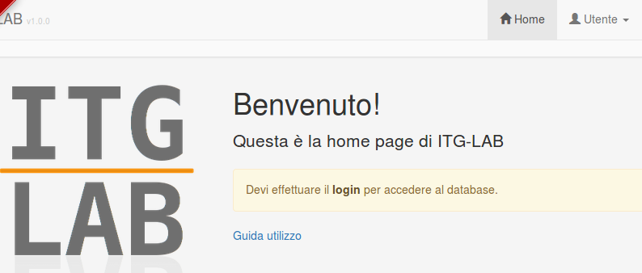
Una volta effettuato l'accesso con la password iniziale, è indispensabile impostare la propria password personale tramite il menu Utente - Password.
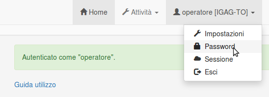
Le attività principali, raggiungibili tramite i pulsanti posti nella home o tramite il menu Attività, si dividono in:
Accettazione
Lavorazione
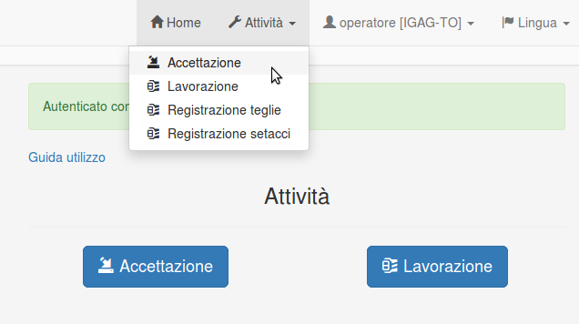
Sono presenti inoltre le voci:
Registrazione teglie
Registrazione setacci
per inserire i dati di peso di teglie, setacci e coperchi utilizzati. In questo modo sarà possibile sottrarre automaticamente questi valori dalle pesate effettuate sui campioni.
La procedura di Accettazione permette di:
Inserire i dati relativi ad una consegna
Inserire i dati relativi alle cassette consegnate
Inserire alcuni dati principali relativi ai campioni contenuti in ogni cassetta.
La procedura è guidata e suddivisa in step successivi:
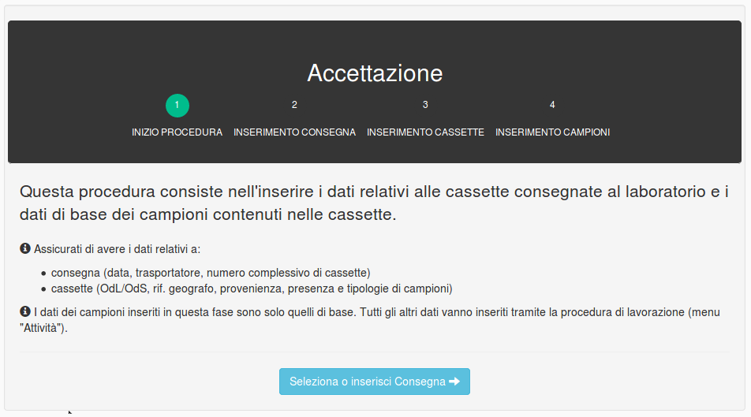
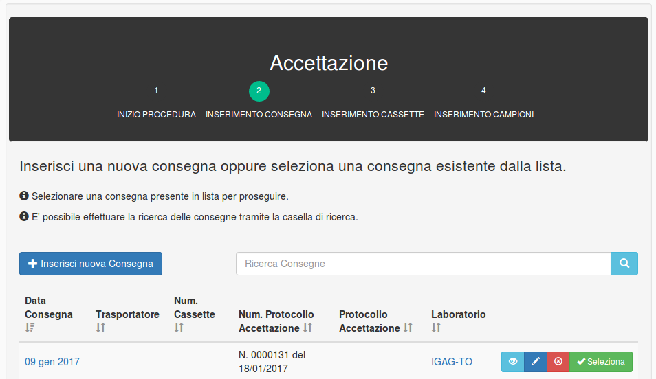
Per inserire una nuova consegna, cliccare sul pulsante Inserisci nuova Consegna.
Se la consegna è già stata inserita e si vuole procedere all'inserimento di cassette e campioni, selezionare una consegna presente nella lista cliccando sul pulsante verde Seleziona.
In tutte le liste i dati vengono visualizzati in "pagine" (gruppi di 20). Per visualizzare la pagina precedete o successiva, utilizzare i pulsanti
Pag. precedenteePag. successivaposti in fondo alla lista.
E' possibile:
Visualizzare i dati della consegna cliccando sul primo pulsante celeste sulla destra di una delle consegna in lista;
Modificare i dati già inseriti cliccando sul pulsante blu con un simbolo "matita";
Eliminare una consegna cliccando sul pulsante rosso.
Nota: Eliminare una consegna comporta l'eliminazione di tutte le cassette, i campioni e i dati di lavorazione associati.
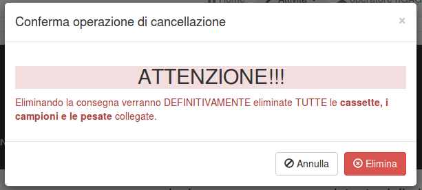
Selezionando tramite il pulsante verde una consegna, si accede allo step successivo.
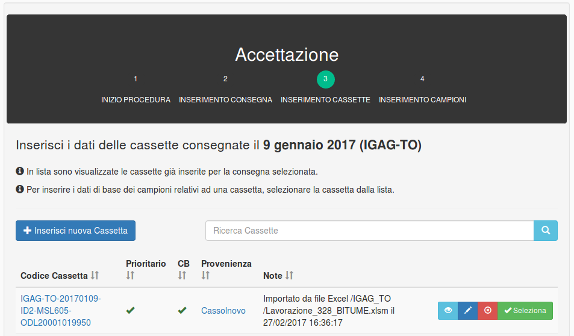
Per inserire una nuova cassetta, cliccare sul pulsante Inserisci nuova Cassetta.
Codice cassetta: una volta salvata, alla cassetta viene assegnato automaticamente un codice composto in questo modo:
[laboratorio di appartenenza]-[data consegna]-[id del database]-[mslink (rif. geografo)]-[odl (ods)].
Ad esempio:IGAG-TO-20170109-ID2-MSL605-ODL20001019950
Se la cassetta è già stata inserita e si vuole procedere all'inserimento dei campioni, selezionare una cassetta presente nella lista cliccando sul pulsante verde Seleziona.
In tutte le liste i dati vengono visualizzati in "pagine" (gruppi di 20). Per visualizzare la pagina precedete o successiva, utilizzare i pulsanti
Pag. precedenteePag. successivaposti in fondo alla lista.
E' possibile:
Visualizzare i dati della cassetta cliccando sul primo pulsante celeste sulla destra di una delle cassette in lista;
Modificare i dati già inseriti cliccando sul pulsante blu con un simbolo "matita";
Eliminare una cassetta cliccando sul pulsante rosso.
Nota: Eliminare una cassetta comporta l'eliminazione di tutte i campioni e i dati di lavorazione associati.
Selezionando tramite il pulsante verde una cassetta, si accede allo step successivo.
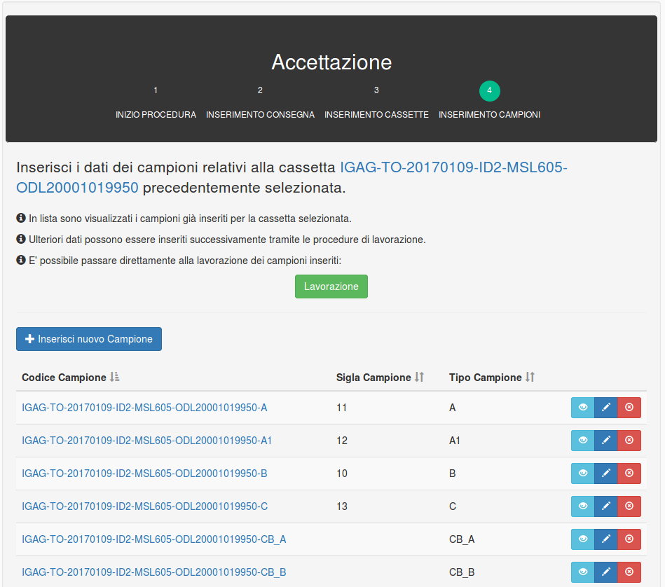
Per inserire una nuovo campione, cliccare sul pulsante Inserisci nuovo Campione. I dati dei campioni inseriti in questa fase sono solo quelli di base. I dati di lavorazione dei campioni vengono inseriti tramite la procedura di lavorazione.
Il pulsante verde Lavorazione permette di accedere direttamente allo step finale della procedura di lavorazione senza passare attraverso la selezione della consegna e della cassetta cui appartengono i campioni.
Codice campione: una volta salvato, al campione viene assegnato automaticamente un codice composto in questo modo:
[codice cassetta]-[tipo campione].
Ad esempio:IGAG-TO-20170109-ID2-MSL605-ODL20001019950-A1
La procedura di lavorazione permette di inserire i dati di lavorazione relativi ai campioni. Prima di inserire i dati di lavorazione dei campioni è necessario selezionare nel database la Consegna e la Cassetta cui appartengono i campioni lavorati.
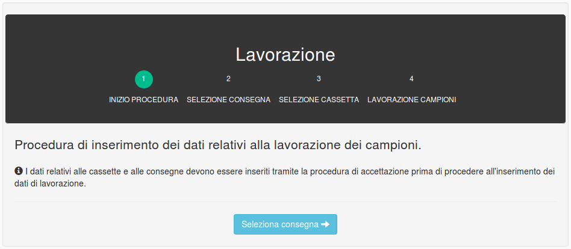
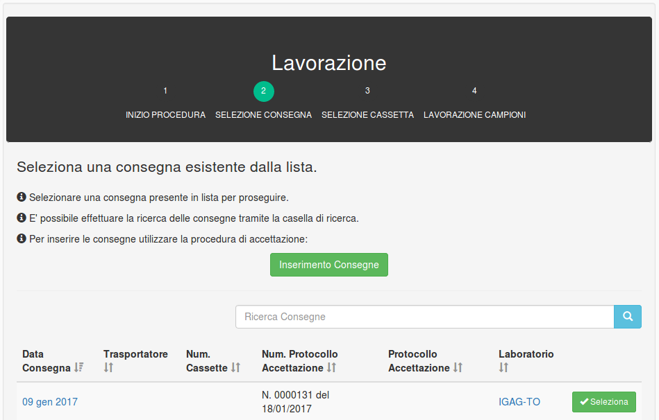
Nella procedura di lavorazione, è necessario in primo luogo selezionare la consegna già inserita. Sono assenti in questo caso i pulsanti di inserimento, modifica e cancellazione, che riguardano la procedura di accettazione.
In tutte le liste i dati vengono visualizzati in "pagine" (gruppi di 20). Per visualizzare la pagina precedete o successiva, utilizzare i pulsanti
Pag. precedenteePag. successivaposti in fondo alla lista.
Selezionando tramite il pulsante verde Seleziona una consegna, si accede allo step successivo.
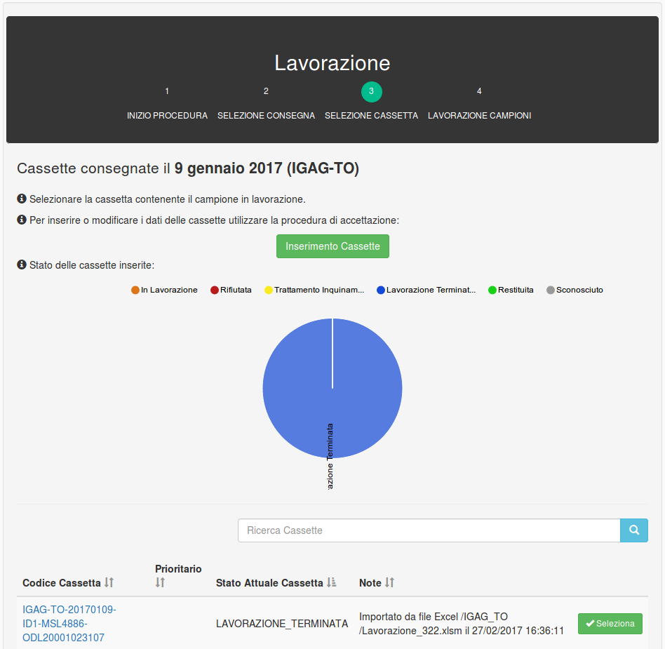
In questo step viene selezionata la cassetta già inserita contenente i campioni in lavorazione. Sono assenti in questo caso i pulsanti di inserimento, modifica e cancellazione, che riguardano la procedura di accettazione.
Selezionando tramite il pulsante verde Seleziona una cassetta, si accede allo step successivo.
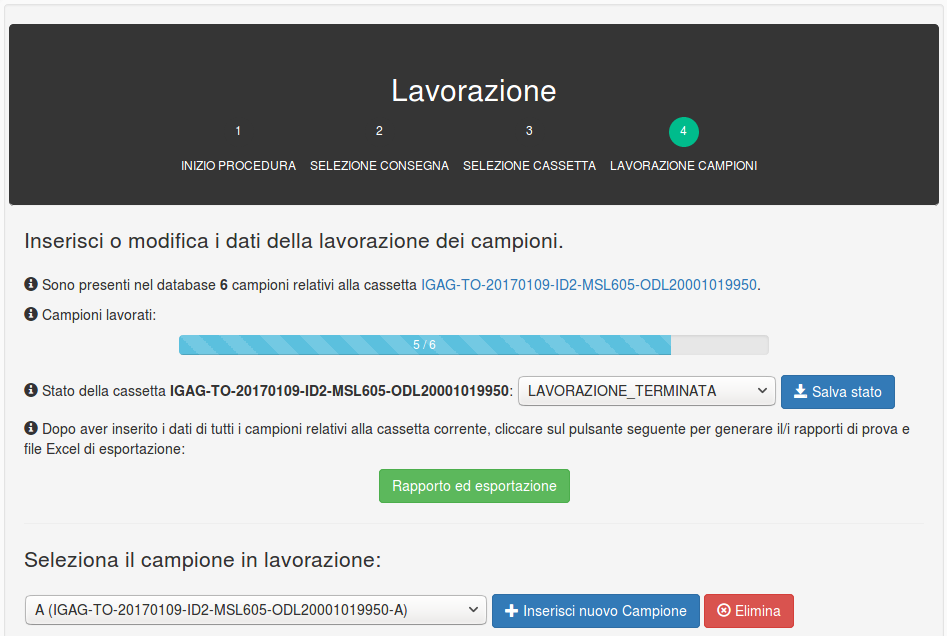
In questo step vengono inseriti i dati di lavorazione di tutti i campioni relativi alla cassetta selezionata nel precedente step.
La selezione del campione corrente avviene tramite il menu a tendina Seleziona il campione in lavorazione. A seconda della tipologia di campione selezionata, il resto della pagina conterrà elementi differenti:
Campione A, A1, B: la pagina conterrà le sezioni:
Dati campione
Pesatura
Setacciatura
Campione C: la pagina conterrà la sezione:
Dati campione
Campioni CB_A, CB_B: la pagina conterrà le sezioni:
Dati campione
Spessore (suddiviso per usura e binder)
Massa Volumica Apparente - Superficie Satura Secca (SSD) (suddiviso per usura e binder)
Percentuale di legante (suddiviso per usura e binder)
Massa Volumica dei granuli dell'aggregato (suddiviso per usura e binder)
Percentuale dei vuoti (suddiviso per usura e binder)
Lavaggio allo 0.063 mm (suddiviso per usura e binder)
Setacciatura (usura)
Setacciatura (binder)
In ogni sezione è presente un pulsante Modifica per inserire e modificare i dati di lavorazione.
Per tutti i tipi di campione, nella sezione Dati di lavorazione dell'interfaccia di inserimento vengono inseriti dati quali la data dell'analisi e l'operatore che esegue l'analisi.
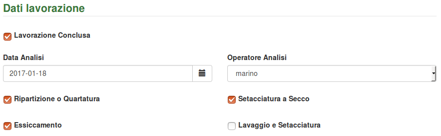
Per quanto riguarda l'operatore, è possibile selezionarne uno tramite il menu a tendina fra quelli registrati per il laboratorio corrente, ma è anche possibile inserire uno o più nomi di operatori non registrati tramite le note, secondo le modalità descritte:
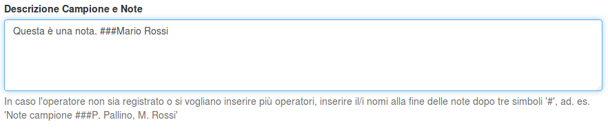
Lasciando vuoto il campo Operatore Analisi ed inserendo il/i nomi nelle note come illustrato, nel rapporto di prova verrà inserito, come operatore che ha eseguito l'analisi, "Mario Rossi".
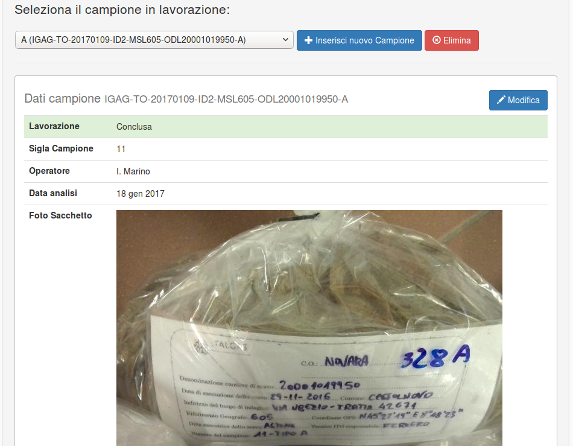
L'inserimento dei dati del campione avviene selezionando il pulsante Modifica della sezione Dati campione.
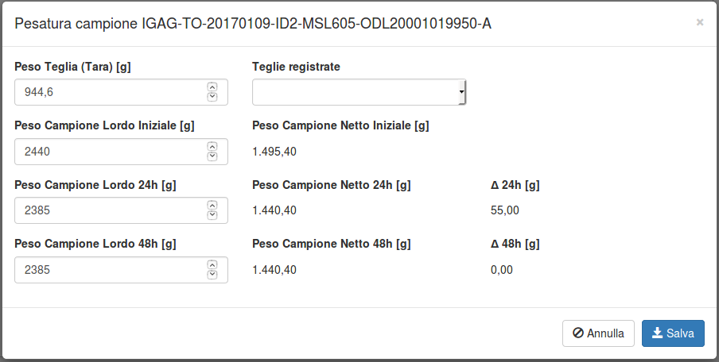
L'inserimento dei dati avviene in modo simile a quanto avviene nel file Excel.
E' possibile inserire manualmente il peso della teglia (tara) oppure selezionare una delle teglie inserite nella sezione Registrazione teglie.
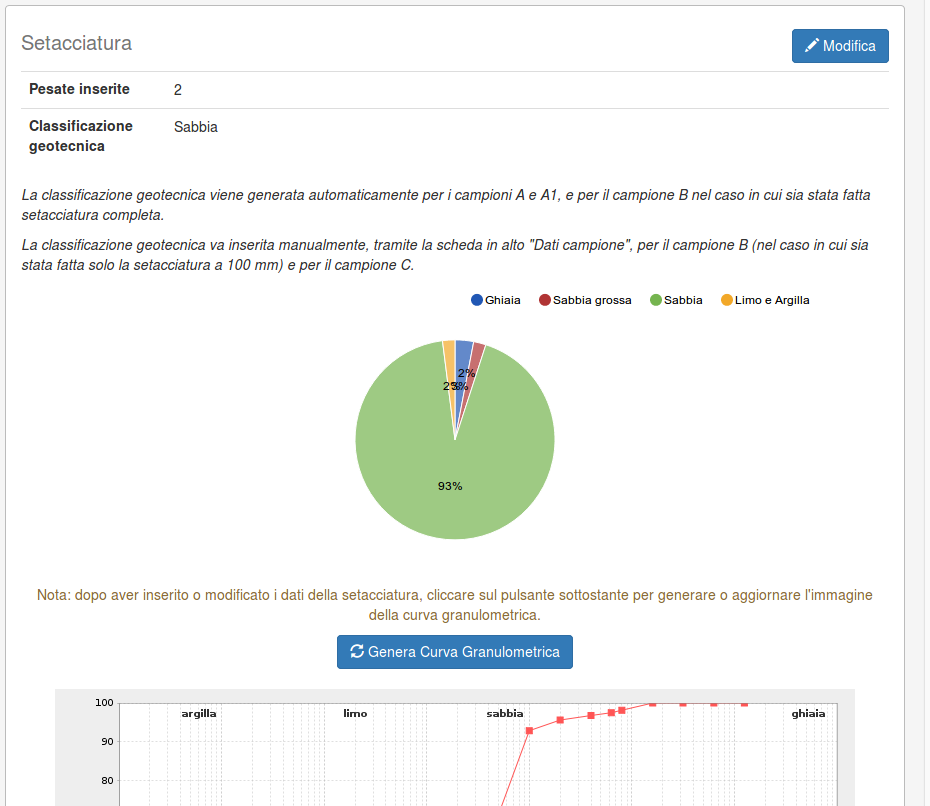
Per inserire i dati di setacciatura, cliccare sul pulsante Modifica.
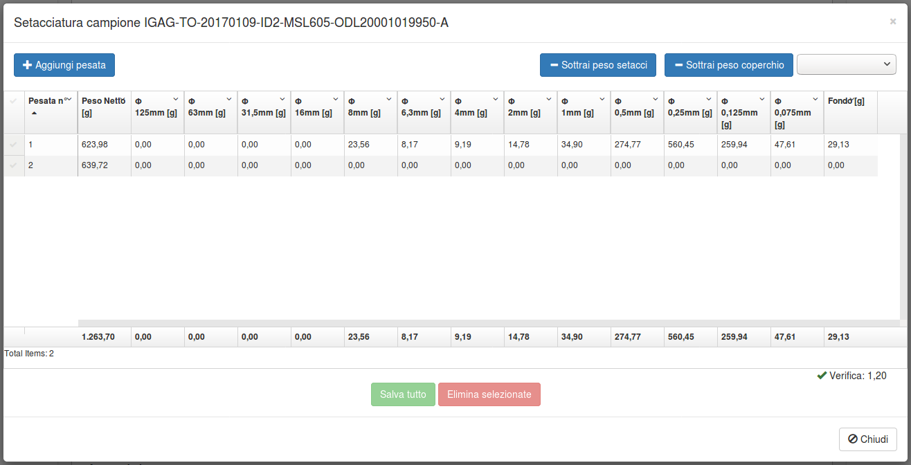
Per inserire una serie di pesate, utilizzare il pulsante Aggiungi pesata e riempire le celle.
E' possibile sottrarre automaticamente dai valori inseriti i pesi dei setacci e/o dei coperchi inseriti nella sezione Registrazione setacci, tramite i pulsanti Sottrai peso setacci e Sottrai peso coperchio.
Una volta inserite le setacciature, la classificazione geotecnica viene generata automaticamente per i campioni A e A1, e per il campione B nel caso in cui sia stata fatta setacciatura completa.
La classificazione geotecnica va invece inserita manualmente, tramite la scheda in alto "Dati campione", per il campione B (nel caso in cui sia stata fatta solo la setacciatura a 100 mm) e per il campione C.
Per generare o aggiornare la curva granulometrica, cliccare sul pulsante Genera curva granulometrica.
Il campione B si distingue da A e A1 per la fase di setacciatura:
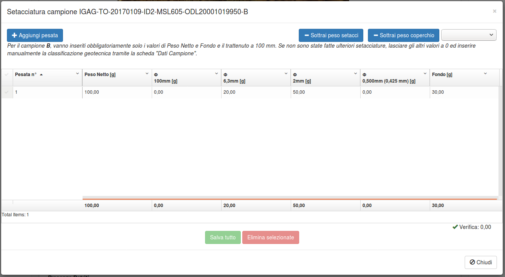
In questo caso, vanno inseriti obbligatoriamente solo i valori di Peso Netto e Fondo e il trattenuto a 100 mm. Se non sono state fatte ulteriori setacciature, lasciare gli altri valori a 0 ed inserire manualmente la classificazione geotecnica tramite la scheda "Dati Campione".
Per il campione C non sono presenti le sezioni Pesatura e Setacciatura.
La classificazione geotecnica va inserita manualmente nell'apposito campo durante l'inserimento dei Dati campione.
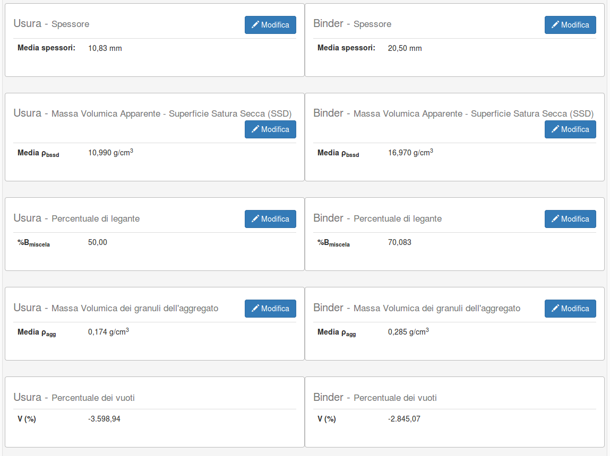
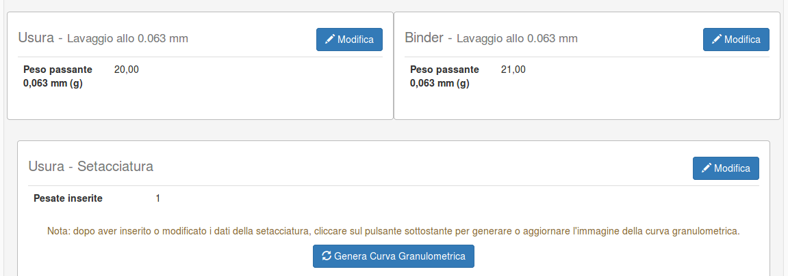
Per i campioni di conglomerato (CB_A e CB_B), sono presenti diverse sezioni, suddivise a loro volta per Usura e Binder.
L'inserimento dei dati per ogni sezione avviene in modo simile al file Excel.
L'inserimento delle setacciature e la generazione delle curve granulometriche avviene in modo simile ai campioni A e A1, a parte i diversi diametri dei setacci.
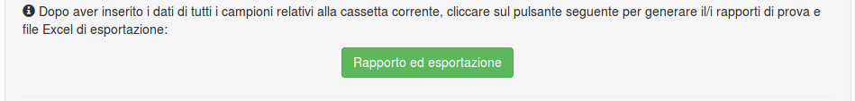
Nella pagina di lavorazione dei campioni, dopo aver inserito i dati di tutti i campioni relativi alla cassetta corrente, cliccare sul pulsante Rapporto ed esportazione per generare il/i rapporti di prova e file Excel di esportazione.
Verrà scaricato un file .zip contenente:
Rapporto di prova per i campioni A, A1, B, C
Rapporto di prova campione CB_A (se presente)
Rapporto di prova campione CB_B (se presente)
File Excel contenente i dati inseriti ed utilizzabile da parte di Italgas per l'estrazione di informazioni. Il file Excel contiene tutti i dati tranne le foto ed i segni di spunta.
Esempio di contenuto dell'archivio zip:
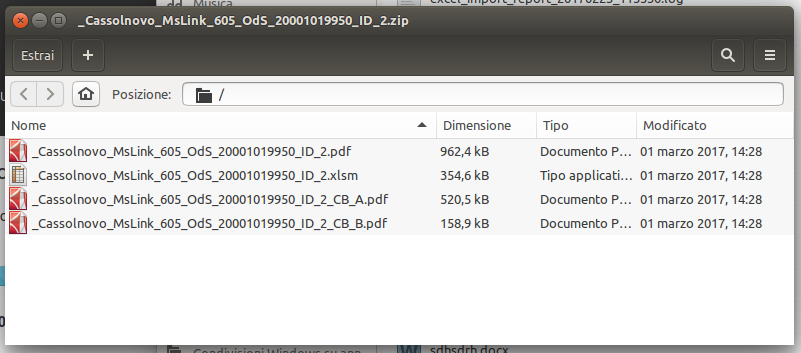